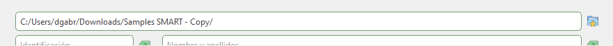
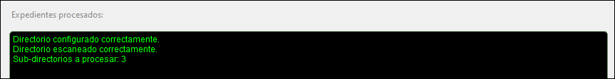
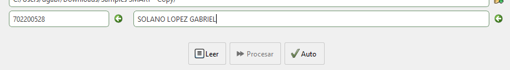
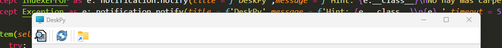

a. Software de distribución libre y "portable" (no requiere instalación), enlace de descarga: LINK.
b. Por políticas de seguridad del sistema operativo de Windows, al ser un archivo ejecutable, al descargar y ejecutar directamente puede generar la alerta de "Software malicioso", seleccionar la opción de "más información" y "ejecutar de todas formas".
a. Ejecutar el software o aplicación.
b. Establecer el directorio de trabajo (carpeta con una o más subcarpetas) con los documentos y nombres claves definidos.
Ejemplo:
c. En la ventana inferior se mostrarán en pantalla 3 avisos:
Ejemplo:
c. Una vez configurado el directorio el usuario puede escanear los datos en un expediente pulsando "Leer", la aplicación leerá el documento designado para tomar los datos correspondientes y rellenar los campos requeridos de forma automática.
Ejemplo:
*El usuario puede validar los datos en los campos y puede modificarlos si así lo requiere.
*Los botones al lado de cada campo de texto permiten borrar el texto completo.
*También puede configurar la ruta o directorio de trabajo y pulsar "Auto". Esta opción no permite verificar los datos uno a uno pero hace el proceso más rápido y sencillo, ya que procesa un expediente tras otro hasta completar todos.
*En la pantalla negra se reportan uno a uno los pasos así como los expedientes trabajados.
a. Nombres clave:
Entrada / Salida
*Formatos de archivos soportados: .pdf, .png, .jpg, .jpeg, .svg, .gif, .webp, .bmp, .tif, .jfif
*Nombrar los documentos a procesar en mayúsculas/minúsculas no afecta el funcionamiento del programa.
*Otras páginas nuevas dentro del "affidavit" las guardará como "(unidentified document)".
*Si por error de la aplicación no reconoce una página, también lo guardará como "(unidentified document)", pero en ningún caso el programa omitirá guardar página(s) no reconocida(s) contenida(s) en el "affidavit".
*Cualquier página no reconocida, se guardará con la certifición de firmas incluida.
Ejemplo:
El usuario dispone de las herramientas: